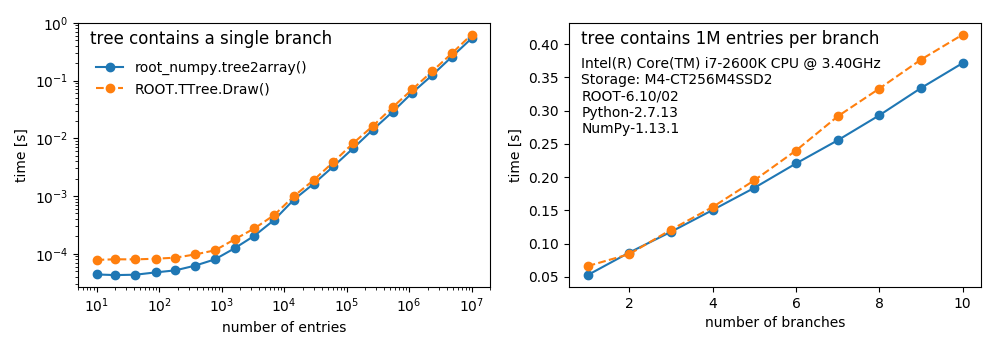

root_numpy¶
The interface between ROOT and NumPy
root_numpy is a Python extension module that provides an efficient interface between ROOT and NumPy. root_numpy’s internals are compiled C++ and can therefore handle large amounts of data much faster than equivalent pure Python implementations.
With your ROOT data in NumPy form, make use of NumPy’s broad library, including fancy indexing, slicing, broadcasting, random sampling, sorting, shape transformations, linear algebra operations, and more. See this tutorial to get started. NumPy is the fundamental library of the scientific Python ecosystem. Using NumPy arrays opens up many new possibilities beyond what ROOT offers. Convert your TTrees into NumPy arrays and use SciPy for numerical integration and optimization, matplotlib for plotting, pandas for data analysis, statsmodels for statistical modelling, scikit-learn for machine learning, and perform quick exploratory analysis in a Jupyter notebook.
At the core of root_numpy are powerful and flexible functions for converting
ROOT TTrees into
structured NumPy arrays as well as converting
NumPy arrays back into ROOT TTrees. root_numpy can convert branches of strings
and basic types such as bool, int, float, double, etc. as well as
variable-length and fixed-length multidimensional arrays and 1D or 2D vectors
of basic types and strings. root_numpy can also create columns in the output
array that are expressions involving the TTree branches similar to
TTree::Draw().
Did we mention that root_numpy is fast?
